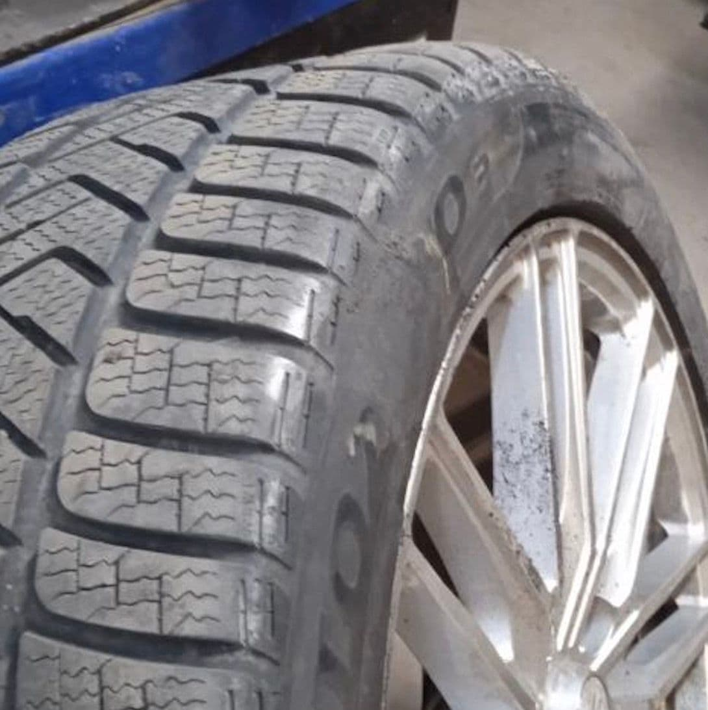
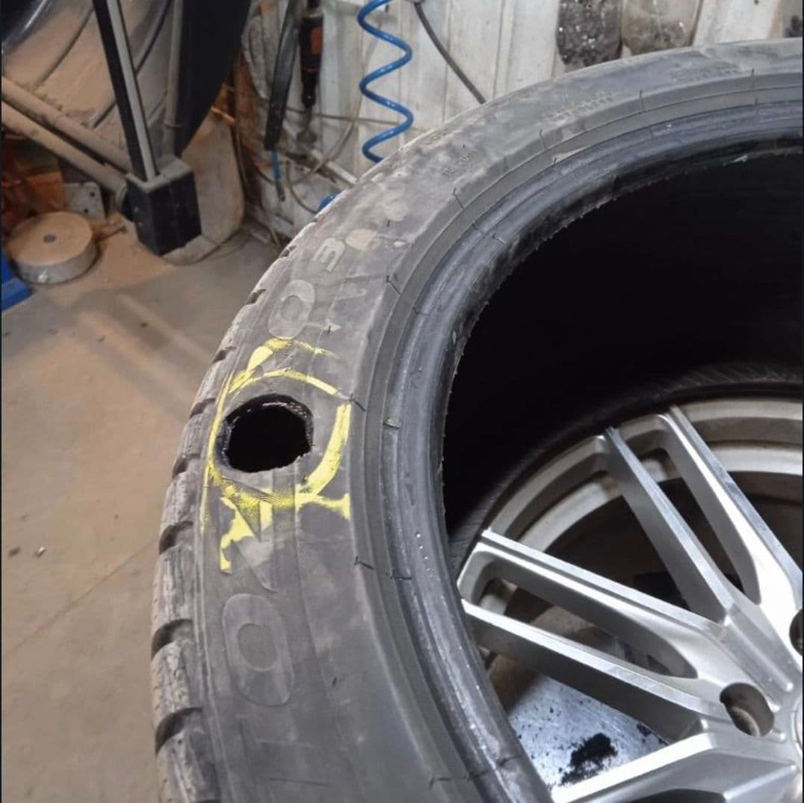
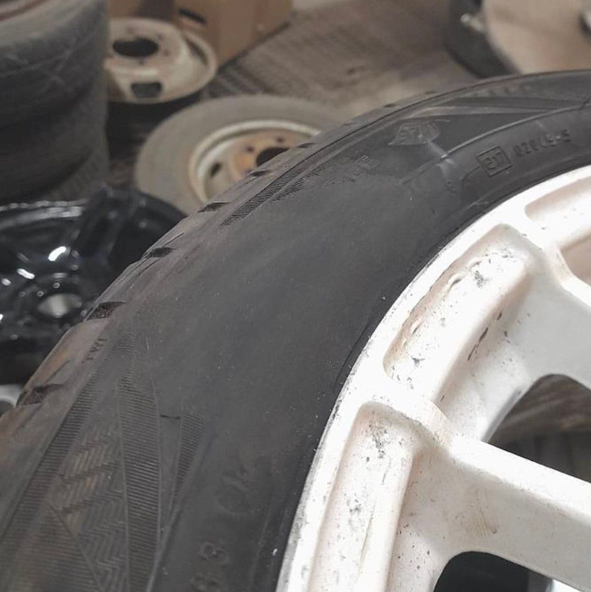
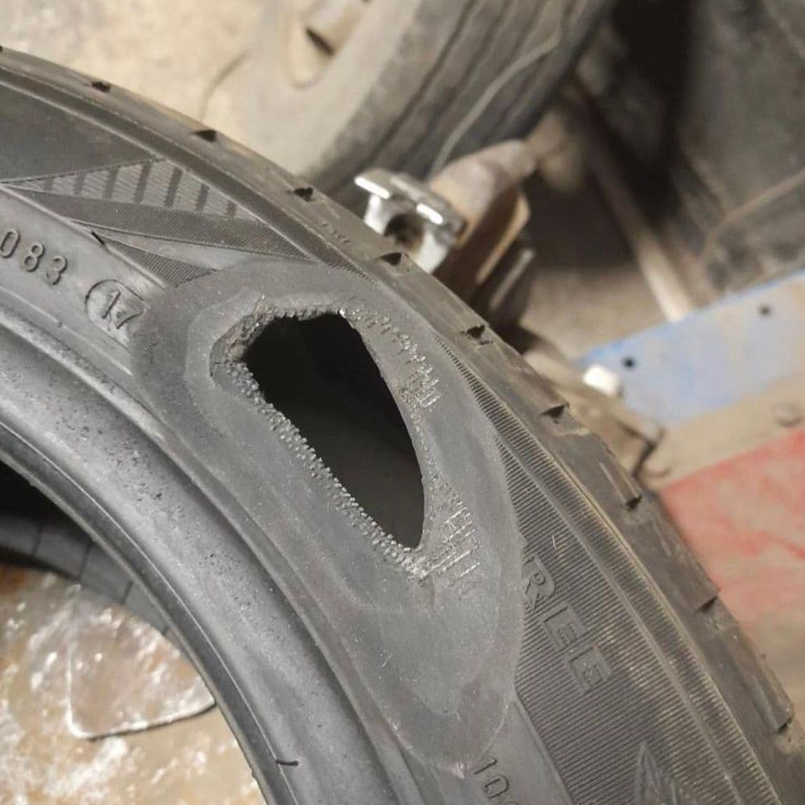

Шиномонтаж на Автозаводской · Москва, ул. Автозаводская 21
Ремонт боковых порезов шин
Качественный ремонт шин, боковых порезов и грыж, повреждений шин любой сложности по технологии холодной и горячей вулканизации. Позвоните и получите консультацию.
Ежедневно 9:00–23:00
Порез на боковине? Починим сегодня
Приезжайте на Автозаводскую — мастер осмотрит шину и сразу назовёт цену.
от 650 ₽
Позвонить
30–60 минхолодная вулканизация
4–6 чгорячая вулканизация
15+ летопыта мастеров
5.0рейтинг на Яндекс.Картах
Полный цикл работ с шинами и дисками
Всё для ваших колёс в одном месте
Работаем с повреждениями любой сложности согласно технологиям ремонта шин.
Ремонт грыжи на колесе
Горячая вулканизация шин
Холодная вулканизация шин
Ремонт шин пластырем
Ремонт шины грибком
Замена шин
Балансировка колес
Хранение шин
Хранение колес
Порошковая покраска дисков
Алмазная проточка дисков
Мастера, которым доверяют свои колёса
Делаем всё строго по технологии ремонта шин — от съёма и установки колёс до балансировки. Без навязанных допов.
Позвонить мастеруУдобно добраться
Москва, ул. Автозаводская д. 21Г — рядом метро Автозаводская и станция МЦК ЗИЛ.
Без ожидания
Запись соблюдается. Холодная вулканизация — от 30 минут до часа, проколы — ещё быстрее.
Полный цикл
Ремонт, сезонная замена, балансировка, хранение шин, покраска и проточка дисков — в одном месте.
Опыт более 15 лет
Наша команда занимается шиномонтажными работами более 15 лет. Через наши руки прошли тысячи автомобилей. Клиенты возвращаются к нам из сезона в сезон.
- Порезы и грыжи любой сложности
- Горячая и холодная вулканизация
- Покраска и проточка дисков
- Долгосрочное хранение шин
0+лет занимаемся шиномонтажом
0+автомобилей прошли через наши руки
0рейтинг на Яндекс.Картах
0%надёжность горячей вулканизации
Выберите ремонт под ваше повреждение
Итоговая стоимость зависит от размера и характера повреждения — мастер назовёт её после осмотра. Позвоните и получите консультацию.
Ремонт шины грибком
от650₽
Использование специальных резиновых грибков, ножек грибков и пластырей для ремонта проколов диаметром до 15 мм без использования специального инструмента.
- Проколы до 15 мм
- Без спецоборудования
Холодная вулканизация
от1000₽
Не подразумевает необходимость термической обработки. Используется для повреждений средней тяжести, проколов, небольших надрывов, боковых задиров на шине.
- От 30 минут до 1 часа
- Средние повреждения
Горячая вулканизация
от2500₽
Высокотемпературное воздействие на различные повреждения целостности шин. Используется для повреждений высокой сложности.
- От 4 до 6 часов
- Повреждения высокой сложности
Было — стало
Потяните ползунок, чтобы сравнить шину до и после ремонта.


ДоПорез диаметром 8 см.
ПослеСделана горячая вулканизация поверхности шины с установкой кордового пластыря.


ДоПорез длиной 7,5 см.
ПослеСделана горячая вулканизация с установкой кордового пластыря с гарантией до полного износа шины.
Отзывы
Клиенты возвращаются к нам из сезона в сезон
Наши клиенты всегда довольны оказанными услугами — убедитесь в этом сами.
Первый раз привез свой автомобиль к ребятам в работу, сделали все быстро и качественно. Теперь постоянно езжу только в этот шиномонтаж. Мастера делают все качественно с четким пониманием своего дела. Очень хорошее место, рекомендую.
Был приятно удивлён, быстро и недорого мастер помог, отнёсся с желанием, и по качеству и по-человечески очень положительно можно описать посещение этого шиномонтажа. Попал случайно, порвалось колесо на 3 кольце, думал цены будут запредельные, но оказалось все очень адекватно, спасибо! Все отзывы абсолютно сходятся с личными впечатлениями.
Отличные ребята, рекомендую данный шиномонтаж! Спустилась в паркинг, колесо спущено под ноль, нашла телефон шиномонтажа, позвонила, ребята сразу согласились приехать, все сделали быстро, оперативно, качественно!
У меня, конечно, совсем маленький водительский стаж — всего 26 лет (официально)... Но могу с полной уверенностью сказать о том, что этот шиномонтаж один из немногих, где работают настоящие профессионалы! Все операции, начиная от съёма/установки колёс до балансировки, выполняются строго по технологии! Кроме того, когда мастер опрятен, вежлив и приятен в общении, в такое место хочется приезжать! Рекомендую однозначно!
Делали боковые порезы. Посчитал, что дешевле сделать, чем покупать новый комплект на всю машину. Оставлял на сутки, все работает.
Запись соблюдается. Не ждал ни минуты. Всё чётко, быстро, при этом отвечают на вопросы без раздражения. На допы разводов не было. Ребята явно дорожат репутацией. Рекомендую.
Ремонтируем по технологии — от и до
Мы работаем с повреждениями любой сложности согласно технологиям ремонта шин. Также оказываем услуги покраски дисков, долгосрочного хранения и сезонной замены шин.
Горячая вулканизация шин — метод термической обработки шины, где каучук нагревается благодаря высоким температурам. Резина становится очень эластичной, максимально удобной для обработки и способной к преобразованию. Ремонтные материалы скрепляются между собой, и благодаря этой процедуре образуется единый слой. Процедура происходит при нагрузке сжатием и температуре от 120 до 140 градусов попеременно.
Длительность процесса горячей вулканизации занимает от 2,5 до 6 часов по технологии ремонта шин, включая подготовительный процесс обработки шины и саму вулканизацию резины, и рассчитывается согласно сложности ремонта шины. Процедура горячей вулканизации включает в себя множество этапов. Подробно ознакомимся с каждым, чтобы потенциальный клиент шиномонтажной мастерской смог понять, подходит ли его транспортному средству данный метод.
Порез шины подвергается обработке фрезой. Параллельно с этой процедурой происходит демонтирование покрышки. Однако мастер должен быть предельно аккуратным, чтобы не повредить корд (техническую ткань, состоящую из продольных нитей).
Обработанный защитными средствами (чтобы грязь, пыль и влага не попали внутрь покрышки) участок покрывается кордовым пластырем нужного для ремонта размера.
Место обработки высушивают, и происходит заполнение каучуком, ранее расплавленным вследствие высоких температур. Далее колесо транспортируют на станок непосредственно для процесса вулканизации.
Осуществляется термообработка — самый главный этап процесса (проводится при температуре 120–140 градусов, как уже было сказано ранее).
Монтируется нужный пластырь внутрь шины с целью улучшения технической части автомобиля, создание дополнительной прочности шины.
Финальным этапом процедуры является заключительная обработка покрышки и её прикрепление на исходное место. Однако эти действия нужно совершать только после остывания шины.
Преимущества горячей вулканизации
- Гарантия результата. Надёжность метода. При соблюдении всех нужных условий вероятность отсутствия негативных последствий или нужды в повторном проведении процедуры составляет примерно 99%.
- После горячей вулканизации водителю транспортного средства дозволено сразу сесть за руль. Ждать определённого времени, чтобы шина зажила или реабилитировалась после метода, не требуется.
- Если в процессе были применены прочные стойкие ленты из качественных материалов, то участок можно подвергать гораздо более высоким температурам, например 200 градусов (ранее было сказано, что максимальная температура составляет 140 градусов, однако у каждого метода существуют исключения).
- Универсальность процедуры. Горячую вулканизацию можно проводить даже в зимний сезон. Она никак не повлияет на состояние автомобильного транспорта.
Недостатки горячей вулканизации
- Процесс достаточно трудоёмкий и энергозатратный. Работникам необходимо быть выносливыми, крепкими и здоровыми физически, чтобы регулярно осуществлять подобную процедуру, и в данное время очень мало специалистов в этой области, так как самое главное — это правильная процедура обработки шины и соблюдение от и до самого процесса вулканизации согласно технологии ремонта шин.
Холодная вулканизация — процесс, схожий с горячей вулканизацией. Суть метода заключается в установке кордового пластыря внутри шины с помощью клеящего компонента.
Процесс холодной вулканизации, как и горячая, включает в себя несколько этапов, однако их не такое большое количество:
Предварительная диагностика шины с целью определения её состояния.
Обезжиривание, подготовка шины и гигиеническая обработка шины.
Нанесение клея на предварительно обработанный участок, на котором будет осуществляться процедура.
Поверх клея накладывается кордовый пластырь, и на него наносится герметик бескамерного слоя шины.
Колесо накачивают и возвращают на исходную позицию.
Основные преимущества холодной вулканизации
- Гарантия результата благодаря прочности пластыря с одним-двумя-тремя слоями корда внутри, который накладывается поверх клеящего компонента.
- Отсутствие сложностей в самом процессе. Не требуется масштабного оборудования последнего года выпуска. Из необходимых вещей потребуются только специалист, пластырь, клей и обезжиривающее вещество.
- Доступная для большинства автомобилистов цена.
- Небольшая продолжительность процедуры. Норма времени является непостоянной: всё зависит от степени повреждения шины, её плотности, внешних факторов окружающей среды, температуры помещения. Средняя продолжительность процесса холодной вулканизации составляет полчаса, реже — 60 минут.
Приезжайте — починим
АдресМосква, м. Автозаводская / МЦК ЗИЛ, ул. Автозаводская д. 21Г
Время работыЕжедневно с 9:00 до 23:00
Для связи8 (985) 207-05-07
Построить маршрут